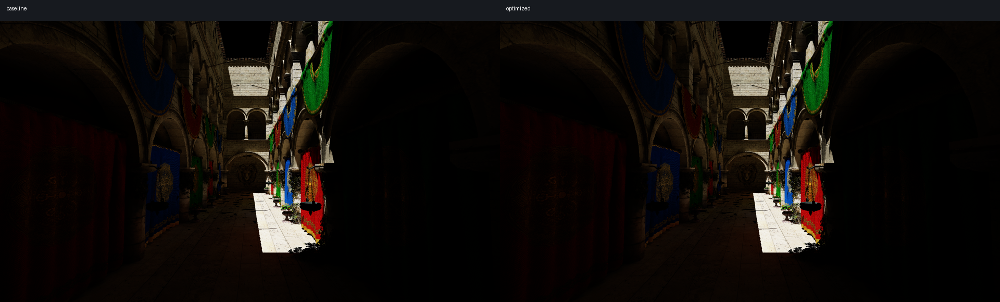

SponzaLambert，1920×1080，RTX 5070，D3D12，方向光强度50，点光关闭。缓存预热2048帧，之后 Accumulate 8192帧，参考未经降噪的65536 spp PT。优化前后使用相同积分公式与全分辨率查询，保留可见性原子标记。baseline 使用原移植版本的完整查询 shader；optimized 增加48字节紧凑缓冲和128候选组共享缓存。不同格子的线程组与超出共享容量的候选继续从全局读取，不截断列表。
| 方案 | MSE | HDR-FLIP | 整图ms | 查询ms | 数据整理ms |
|---|---|---|---|---|---|
| baseline | 0.00028918867 | 0.21366 | 13.836 | 6.997 | 0.000 |
| optimized | 0.00028941468 | 0.21365 | 10.886 | 4.080 | 0.004 |
消融：仅精简普通显示路径（移走调试字段读取/计算），保留大结构全局读取、不使用组共享，查询 3.988 ms、整图 10.842 ms。因此本次主要收益来自普通显示路径精简；组共享与紧凑缓冲相对该消融没有表现出独立收益，可能受到候选分布、缓存和组同步成本影响，尚未实测各硬件计数器。
| 方案 | 开启ms | 关闭ms | 差值ms |
|---|---|---|---|
| baseline | 4.0614 | 4.0575 | 0.0039 |
| optimized | 4.0641 | 4.0577 | 0.0064 |

原子标记实验在同一份冻结缓存上交替开关标记，每次预热32帧、计时128帧，各测3次。冻结期间停止生成、积分与回收，防止关闭标记改变缓存分布。该消融只用于测开销，正式路径仍开启标记。详情见 完整数据。